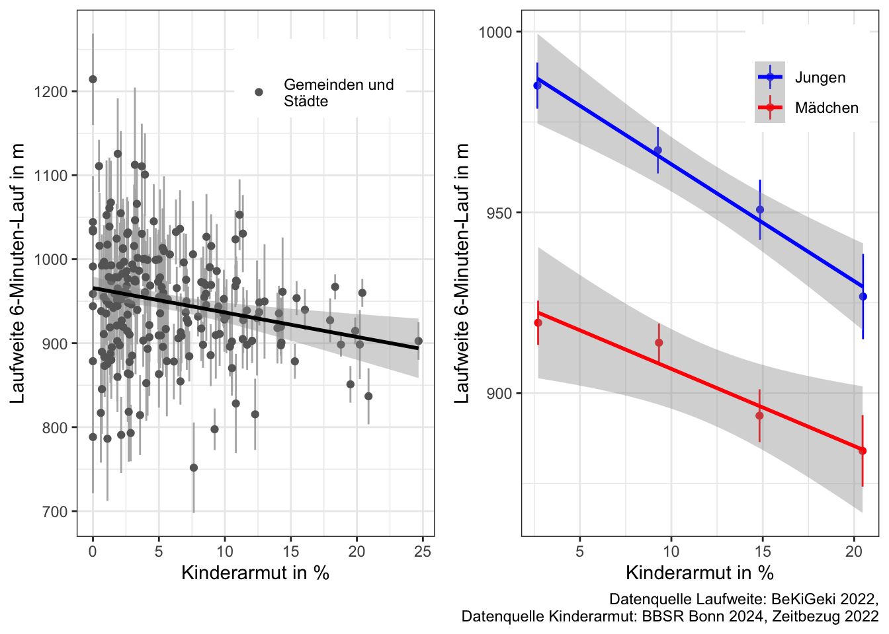
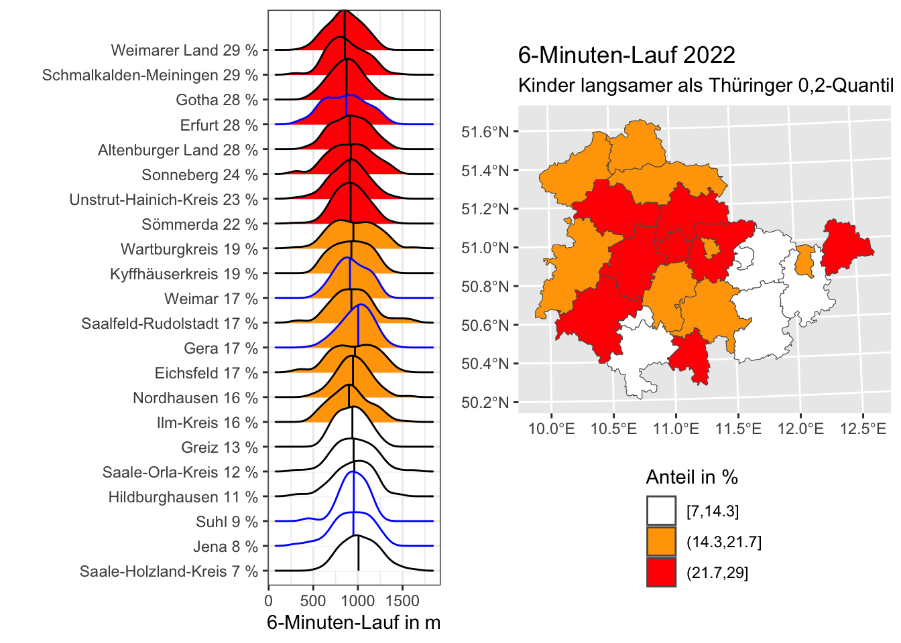
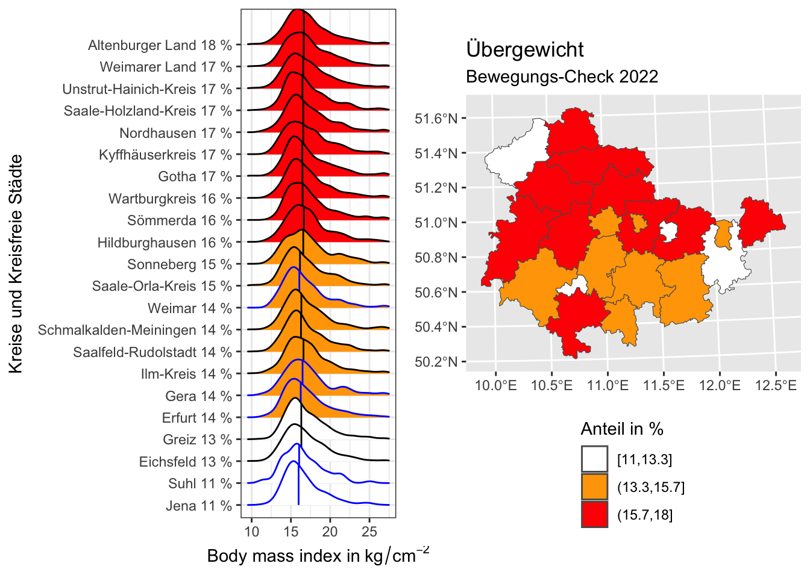
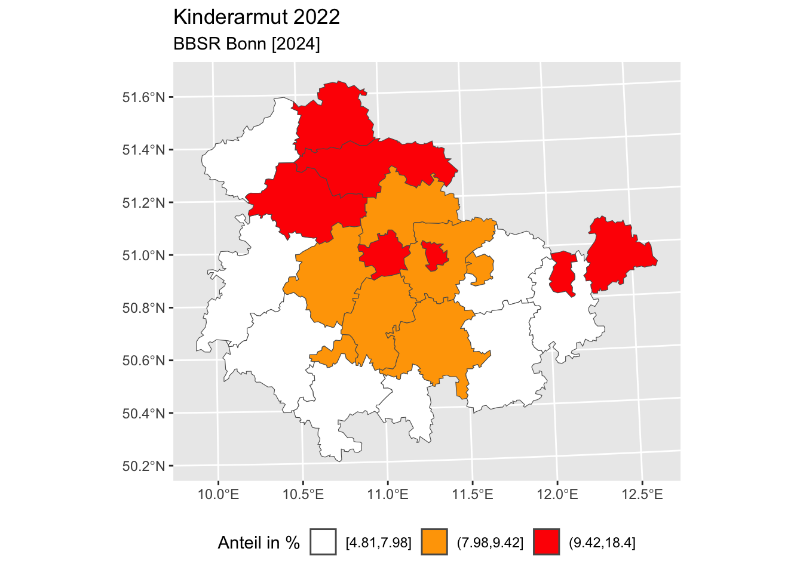

Laufausdauer, Konstitution und Kinderarmut 2022
Gemeindeebene: Kinderarmut Jahr 2022

Kreisebene: 6-Minuten-Lauf, Übergewicht und Kinderarmut Jahr 2022
6-Minuten-Lauf
- Sortierung der Kreise nach Anteil an Kindern deren Laufleistung im 6-Minuten-Lauf im Schuljahr 2022/2023 unterhalb des thüringenweiten 0,2-Quantils lag (Jungen: 846 m; Mädchen: 810 m; Schuljahr 2022/2023)

Übergewicht
- Anteil an Kindern im jeweiligen Kreis in Prozent, die am Bewegungs-Check im Schuljahr 2022/2023 teilnahmen und nach freiwilliger Angabe von Masse und Größe nach:
Kromeyer-Hauschild, K., Wabitsch, M., Kunze, D., Geller, F., Geiß, H. C., Hesse, V., von Hippel, A., Jaeger, U., Johnsen, D., Korte, W., Menner, K., Müller, G., Müller, J. M., Niemann-Pilatus, A., Remer, T., Schaefer, F., Wittchen, H.-U., Zabransky, S., Zellner, K., … Hebebrand, J. (2001). Perzentile für den Body-mass-Index für das Kindes- und Jugendalter unter Heranziehung verschiedener deutscher Stichproben. Monatsschrift Kinderheilkunde, 149(8), 807–818.
als “übergewichtig” oder “adipös” eingstuft würden
- Body-Mass-Index sortiert nach Anteil übergewichtiger Teilnehmerkinder in Prozent

Kinderarmut
- “Nicht erwerbsfähige SGBII-Leistungsberechtigte unter 15 Jahren je 100 Einwohner unter 15 Jahren”, Daten von Bundesinstitut für Bau-, Stadt- und Raumforschung, BBSR Bonn [2024], www.bbsr.bund.de, Raumbezug: Kreis, Indikator-ID: 14439, Zeitbezug 2022

Aktualisierungen
- 2024-07-15: Erstellen der Seite
Wiederverwendung
Zitat
Mit BibTeX zitieren:
@online{wöhrl2024,
author = {Toni Wöhrl and Florian Bähr},
editor = {},
title = {Laufausdauer, Konstitution und Kinderarmut 2022},
date = {2024-07-15},
url = {https://bekigeki.github.io/019.html},
langid = {de}
}
Bitte zitieren Sie diese Arbeit als:
Toni Wöhrl, & Florian Bähr. (2024, July 15). Laufausdauer,
Konstitution und Kinderarmut 2022. https://bekigeki.github.io/019.html